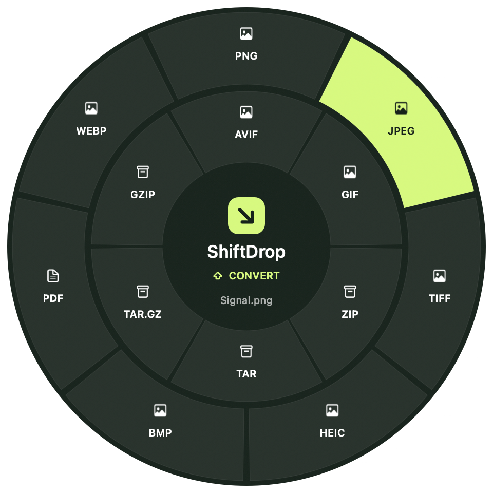
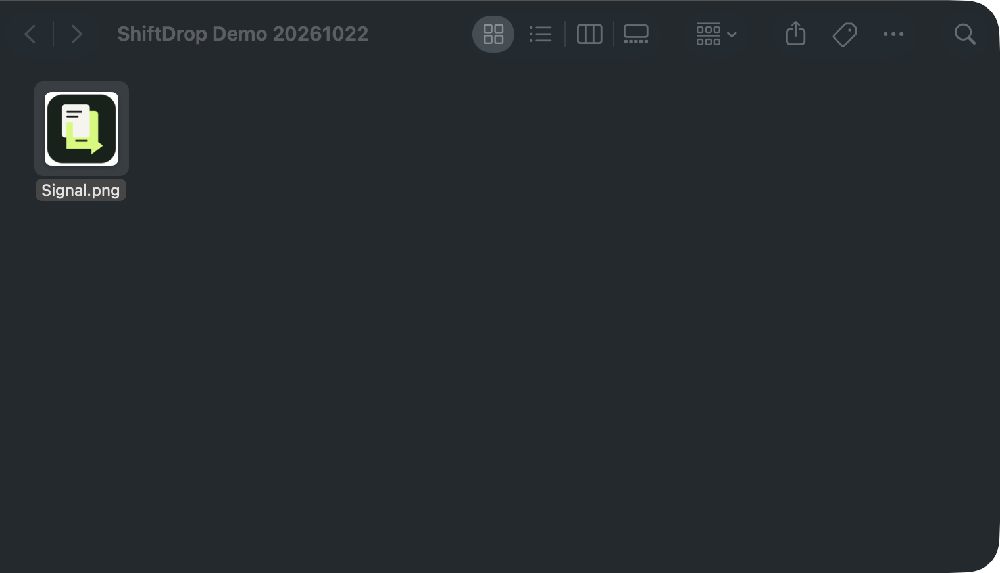
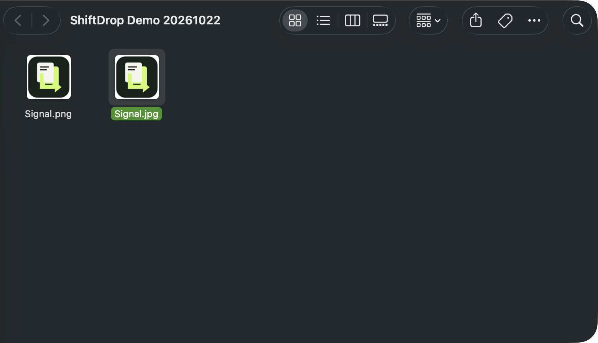
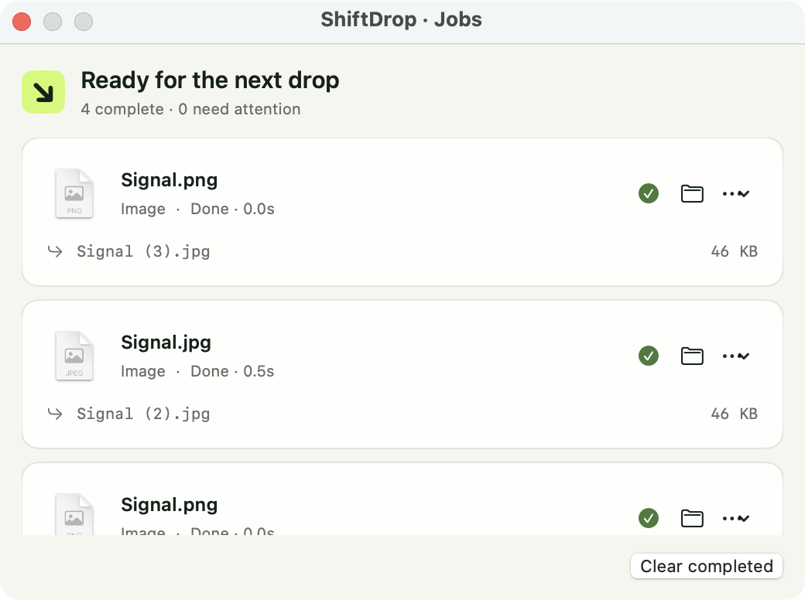
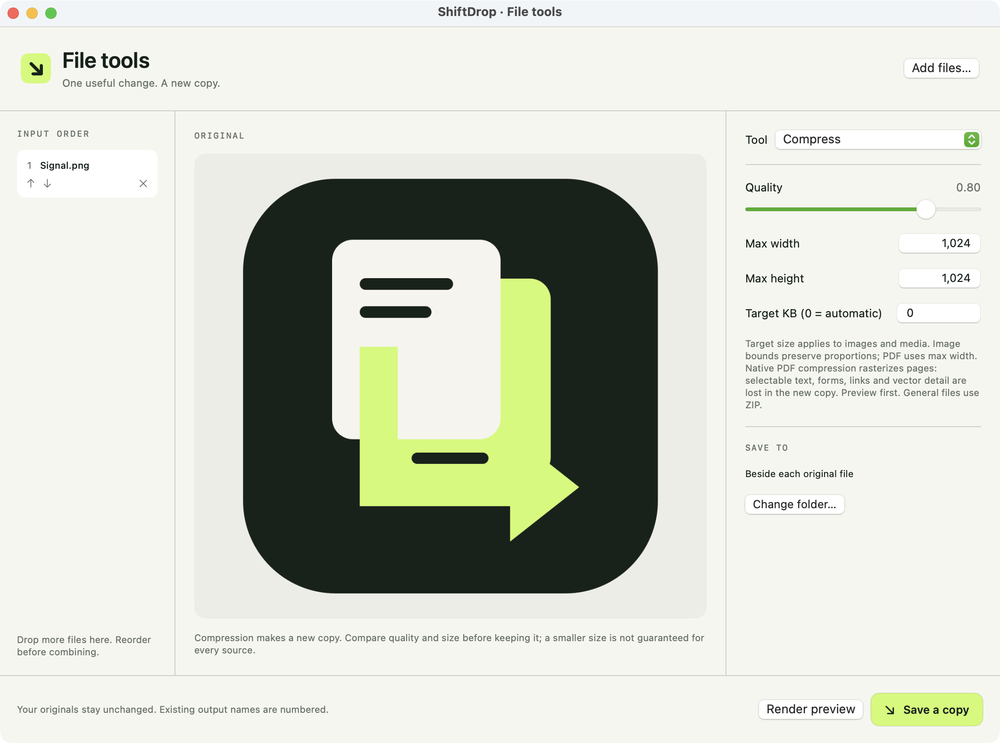

ShiftDrop
Stay in Finder.
Your next file move. Right at your pointer.

DRAG A FILE. MAKE A SMALL SHIFT.
 ShiftDrop
ShiftDropDrag. Hold Shift. Convert.
⇧
Hold while dragging




A copy. Right beside the original.
Signal.png
 ShiftDrop
ShiftDropMeet your modifiers.
⇧
Shift converts.Choose a file format.
⌘
Command opens tools.Give a file a little attention.
⌃
Control takes action.Choose the next move.


ShiftDrop
A small shift. A faster finish.
BUILT FOR THE WAY FILES MOVE.